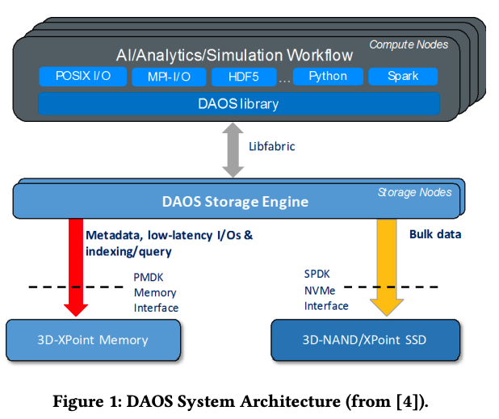
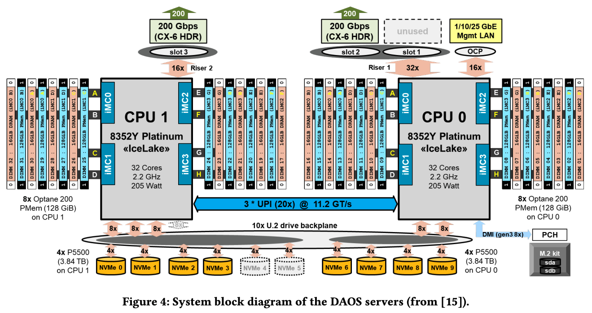
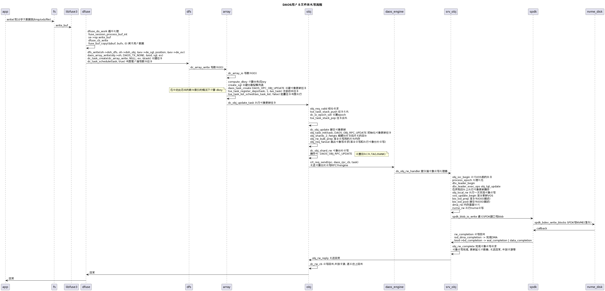
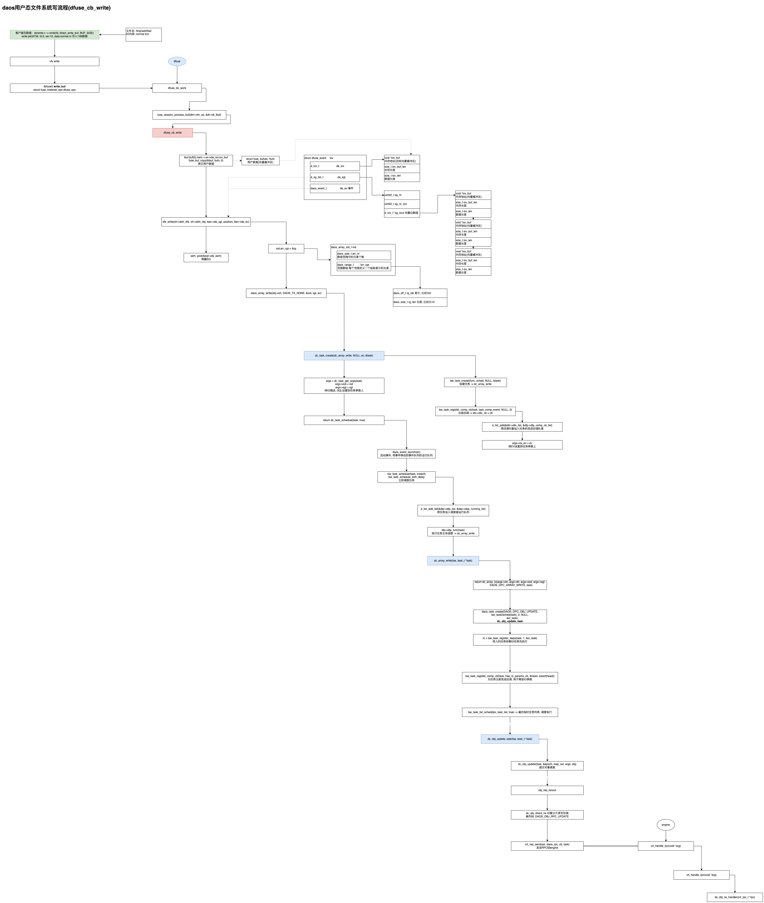

DAOS用户态文件系统IO路径(dfuse io全路径)
DAOS用户态文件系统IO路径(dfuse io全路径)
简介
分布式异步对象存储（DAOS，Distributed Asynchronous Object Storage）是一个开源的可扩展存储系统，从根本上设计用于在用户空间支持SCM和NVMe存储。DAOS在IO500基准测试中展现出领先的性能
DAOS从头开始设计，以利用现代化存储硬件（SCM、NVMe和CXL SSD）。其先进的低级键值API使其具有比传统基于POSIX的并行文件系统更高的IOPS和可扩展性，DAOS的IO500结果 [2] 也证实了这一点。需要注意的是，虽然DAOS提供了POSIX抽象层，但它也可以直接与自定义I/O中间件（如MPI-IO、HDF和几个AI/分析框架）集成，以提供比POSIX更多的功能。本研究仅在DAOS POSIX容器之上使用DAOS DFS API
DAOS架构:


用户态文件系统IO路径
前置条件: 创建存储池, 容器, 以及通过dfuse挂载容器到文件系统分区, 如/tmp/sxb/
#创建池, 查池
dmg pool create sxb -z 4g; dmg pool list --verbose
#创建容器, 查容器
daos container create sxb --type POSIX sxb; daos container query sxb sxb --verbose; daos cont get-prop sxb sxb
#挂载容器到/tmp/sxb分区
mkdir -p /tmp/sxb; dfuse --mountpoint=/tmp/sxb --pool=sxb --cont=sxb; df -h
#写文件
cd /tmp/sxb
for i in {0..5};do
echo "$i, `date`"
dd if=/dev/zero of=$i bs=1M count=100 oflag=direct
sleep 3
done
IO路径
时序图

流程简图

流程说明
|
|
客户端写数组
dc_array_write
daos_task_get_args task和args可互转
dc_array_io opc = DAOS_OPC_ARRAY_WRITE 操作码是写数组 读:DAOS_OPC_ARRAY_READ
array_hdl2ptr
io_extent_same
D_INIT_LIST_HEAD(&io_task_list)
daos_task_create(DAOS_OPC_ARRAY_GET_SIZE 短读任务 DAOS_OPC_ARRAY_READ
while (u < rg_iod->arr_nr) 遍历每个范围，但同时组合属于同一 dkey 的连续范围。 如果用户给出的范围不增加偏移量，则它们可能不会合并，除非分隔范围也属于同一个 dkey
compute_dkey 计算分布式key 在给定此范围的数组索引的情况下计算 dkey。 还计算从我们开始的索引开始，dkey 可以保存的记录数写作。 相对于 dkey 的记录索引, 比如10B, dkey_val=1
struct io_params *prev, *current 如果有多个dkey io, 则通过链表连接起来
num_ios++
d_iov_set(dkey, ¶ms->dkey_val, sizeof(uint64_t));
d_iov_set(&iod->iod_name, ¶ms->akey_val, 1);
compute_dkey 再次计算dkey
create_sgl 创建分散聚集列表
daos_task_create(DAOS_OPC_OBJ_FETCH 读: DAOS_OPC_ARRAY_READ 按索引号 -> dc_obj_fetch_task
daos_task_create(DAOS_OPC_OBJ_UPDATE 写 或 DAOS_OPC_ARRAY_PUNCH truncate dc_funcs[opc].task_func 客户端方法数组
daos_task_get_args
tse_task_register_deps 注册在计划任务之前需要完成的依赖任务。 依赖任务无法进行, 如果一个任务依赖于其他任务，只有依赖的任务完成了，才可以将任务添加到调度器列表中
tse_task_list_add(io_task, &io_task_list) d_list_add_tail(&dtp->dtp_task_list, head); 添加任务到链表
tse_task_register_comp_cb(task, free_io_params_cb, &head, sizeof(head)) 为任务注册完成回调
if (op_type == DAOS_OPC_ARRAY_READ && array->byte_array) 短读
tse_task_register_deps(task, 1, &stask) 注册依赖任务, 最终是子减父引用
tse_task_list_add(stask, &io_task_list) 加到io任务列表
tse_task_list_sched(&io_task_list, false); 批量任务调度执行 -> dc_obj_update_task
客户端对象更新
dc_obj_update_task(tse_task_t *task) DAOS_OPC_OBJ_UPDATE 写
obj_req_valid(task, args, DAOS_OBJ_RPC_UPDATE
obj_auxi = tse_task_stack_push(task, sizeof(*obj_auxi)) -> 将任务压栈
pushed_ptr = dtp->dtp_buf + sizeof(dtp->dtp_buf) - dtp->dtp_stack_top
...
dc_io_epoch_set(epoch, opc)
tse_task_stack_pop -> 将任务从栈上弹出来
poped_ptr = dtp->dtp_buf + sizeof(dtp->dtp_buf) - dtp->dtp_stack_top
dc_tx_attach(args->th, obj, DAOS_OBJ_RPC_UPDATE, task) 如果事务有效(hdl.cookie == 1), 则走dtx
return dc_obj_update(task, &epoch, map_ver, args, obj) -> 提交对象更新
obj_task_init(task, DAOS_OBJ_RPC_UPDATE, map_ver, args->th, &obj_auxi, obj)
obj_task_init_common(task, opc, map_ver, th, auxi, obj)
tse_task_stack_push
shard_task_list_init(obj_auxi)
obj_auxi->is_ec_obj = obj_is_ec(obj) -> 设置EC对象标志
tse_task_register_comp_cb(task, obj_comp_cb, NULL, 0) -> 为任务注册对象完成回调, 弹出任务, 重试, 错误处理等
----------------------
obj_update_sgls_dup(obj_auxi, args) -> 用户可能提供 iov_len < iov_buf_len 的 sql，这可能会给内部处理带来一些麻烦，例如 crt_bulk_create/daos_iov_left() 总是使用 iov_buf_len。 对于这种情况，我们复制 sql 并使其 iov_buf_len = iov_len
obj_auxi->dkey_hash = obj_dkey2hash(obj->cob_md.omd_id, args->dkey) -> 比如为1
if (obj_is_ec(obj))
obj_rw_req_reassemb(obj, args, NULL, obj_auxi) -> EC对象需要, 重新组装对象读写请求
obj_update_shards_get
obj_shards_2_fwtgts -> 根据分片查找转发的目标
req_tgts->ort_shard_tgts = req_tgts->ort_tgts_inline -> 分片目标数组，包含 (ort_grp_nr * ort_grp_size) 个目标。 如果#targets <= OBJ_TGT_INLINE_NR 那么它指向ort_tgts_inline。 在数组中，[0, ort_grp_size - 1] 表示第一组，[ort_grp_size, ort_grp_size * 2 - 1] 表示第二组，依此类推。 如果 (ort_srv_disp == 1)，则在每个组中，第一个目标是领导分片，后面的 (ort_grp_size - 1) 目标是前向非领导分片。 现在只有一种情况 (ort_grp_nr > 1) 用于对象打孔，所有其他情况均为 (ort_grp_nr == 1)
obj_shard_tgts_query -> 分片目标查询
obj_csum_update
-------------------
obj_req_get_tgts 获取对象对应的目标
obj_dkey2grpmemb
obj_dkey2grpidx
pool_map_ver = pool_map_get_version(pool->dp_map)
grp_size = obj_get_grp_size(obj)
grp_idx = d_hash_jump(hash, obj->cob_shards_nr / grp_size) how hash generate? obj with pool
obj_shards_2_fwtgts
obj_shard_tgts_query 分片目标查询
obj_shard_open
dc_obj_shard_open
pool_map_find_target 二分查找
comp_sorter_find_target(sorter, id)
daos_array_find
array_bin_search
obj_shard2tgtid
*tgt_id = obj->cob_shards->do_shards[shard].do_target_id -> dc_obj_layout 客户端对象布局
obj_shard_close(obj_shard)
obj_auxi->flags |= ORF_CONTAIN_LEADER -> 要求转发给容器leader
obj_grp_leader_get
pl_select_leader obj_get_shard
array_bin_search 二分查找 daos_obj_classes
tse_task_register_comp_cb(task, obj_comp_cb, NULL, 0)
obj_csum_update(obj, args, obj_auxi)
obj_rw_bulk_prep(obj, args->iods, args->sgls, args->nr, true, obj_auxi->req_tgts.ort_srv_disp, task, obj_auxi) -> 准备读写大块数据
daos_sgls_packed_size -> 内联提取需要将 sqls 缓冲区打包到 RPC 中，因此使用它来检查是否需要批量传输
obj_bulk_prep
crt_bulk_create
crt_bulk_bind
obj_req_fanout(obj, obj_auxi, dkey_hash, map_ver, epoch, shard_rw_prep, dc_obj_shard_rw, task) -> 扇出 shard_io_cb = io_cb = dc_obj_shard_rw
客户端对象分片读写(读写对象分片)
dc_obj_shard_rw 客户端对象分片读写(读写对象分片)
dc_cont2uuid(shard->do_co, &cont_hdl_uuid, &cont_uuid) -> 设置容器uuid
obj_shard_ptr2pool(shard) 根据分片获取池
tgt_ep.ep_grp = pool->dp_sys->sy_group
tgt_ep.ep_tag = shard->do_target_idx
tgt_ep.ep_rank = shard->do_target_rank -> 设置cart端点(目标组,tag,rank)
obj_req_create opc = DAOS_OBJ_RPC_UPDATE -> ds_obj_rw_handler
crt_req_create(crt_ctx, tgt_ep, opcode, req)
uuid_copy
daos_dti_copy 拷贝dtx_id
orw... > 填充容器读写结构体
跳过ec逻辑
tse_task_register_comp_cb(task, dc_rw_cb -> 注册容器读写任务回调
daos_rpc_send
crt_req_send(rpc, daos_rpc_cb, task) -> engine收到后处理 -> ds_obj_rw_handler -> tse_task_complete 发送完成回调流程:hg -> crt_hg_req_send_cb -> crp_complete_cb -> -> daos_rpc_cb -> dc_rw_cb
服务端对象读写处理器(DAOS_OBJ_RPC_UPDATE)
ds_obj_rw_handler(crt_rpc_t *rpc) -> 服务端对象读写处理器(DAOS_OBJ_RPC_UPDATE)
obj_ioc_begin 访问VOS前的各种检查
obj_rpc_is_fetch
process_epoch
obj_rpc_is_fetch
rc = dtx_begin 返回超时?
dtx_handle_init
dtx_shares_init(dth) 初始化以下链表, 提交,中断,活动,检查
dtx_epoch_bound
vos_dtx_rsrvd_init(dth)
obj_local_rw 本地读写
更新目标， 落盘
更新目标， 落盘
ds_obj_tgt_update_handler
obj_ioc_begin 访问vos前的各种检查
obj_ioc_begin_lite -> 设置lite IO上下文，到目前为止仅适用于复合RPC，1.还没有关联对象，2.权限检查（不确定它是读/写）
obj_ioc_init -> 查找并返回容器句柄，如果是重建句柄，永远不会关联特定容器，则容器结构将返回给ioc::ioc_coc
ds_cont_csummer_init(coc) -> 如果尚未加载，则按需加载 csummer 进行重建
dss_rpc_cntr_enter(DSS_RC_OBJ) -> 增加 RPC 类型的活动计数器和总计数器
tls = obj_tls_get()
ioc->ioc_start_time = daos_get_ntime() -> IO开始时间
obj_inflight_io_check
如果传入 I/O 处于集成期间(integration)，则需要等待 vos 丢弃完成，否则可能会丢弃这些新的正在进行的 I/O 更新
重建过程中的所有I/O，都需要等待重建栅栏生成（参见rebuild_prepare_one()），这将为重建创建一个边界，因此不应重建boundary(epoch)之后的数据，否则可能会被写入 重复，这可能会导致 VOS 失败
obj_capa_check -> DAOS-7235 obj：当 cont_rf 损坏时关闭读/写权限，(#5822) 对于活动打开的容器句柄，DAOS 将在内部 - 1. 当 cont_rf 损坏时关闭读/写权限 2. 当 cont_rf 损坏时打开读/写权限 通过以下方式恢复 - 重新集成故障设备，或通过清除 UNCLEAN 容器状态 - “daos cont set-prop --properties=status:healthy ...” 将测试用例添加到 co_rf_simple()。 现在DAOS_PROP_CO_STATUS仅用于存储cont_create的pm_ver，以及当用户清除UNCLEAN状态时。 并且不要将 UNCLEAN 状态设置为 RDB 以避免在检查活动容器句柄时出现歧义
obj_ioc_init_oca
process_epoch -> 处理传入操作的纪元状态。 一旦该函数返回，纪元状态将包含选定的纪元。 另外，如果返回值为PE_OK_LOCAL，则该纪元可以毫无不确定性地用于本地RDG操作
dtx_leader_begin
dtx_handle_init
vos_dtx_attach
dtx_leader_exec_ops(dlh, obj_tgt_update, NULL, 0, &exec_arg) -> 在所有目标上执行对象更新操作
dtx_leader_end(dlh, ioc.ioc_coh, rc)
local_rc = func(dlh, func_arg, -1, NULL) -> obj_tgt_update -> 本地仅执行一次对象读写 -> obj_local_rw(exec_arg->rpc, exec_arg->ioc, &dlh->dlh_handle)
--------------------------
XXX：对于非单独DTX，领导者和非领导者将并行地进行各自的局部修改。 如果非领导者的速度太快，以至于非领导者可能已经开始处理下一个 RPC，但领导者还没有真正开始当前的修改，例如在批量数据传输阶段被阻止。 在这种情况下，有可能当non-leader处理下一个请求时，它命中了本地刚刚准备好的DTX，那么non-leader就会向leader检查这样的DTX状态。 但此时，Leader 上的 DTX 条目不存在，这会误导非 Leader 错过中止此类 DTX。 为了避免这种糟糕的情况，领导者需要在将当前请求分派给非领导者之前在 DRAM 中构建其 DTX 条目。 另一方面，即使对于单独的DTX，由于服务器端负载过重，PRC也可能被延迟处理。 如果是大数据传输的更新RPC，那么客户端有可能认为更新RPC超时，在原来的RPC批量数据传输期间重新发送RPC，这会导致CPU消耗，然后服务器上的重发逻辑将找不到相关的 DTX 条目，因为原始 RPC 的 DTX 尚未“准备好”。 在这种情况下，更新请求将在服务器上双重执行。 应该避免这种情况。 因此，在批量数据传输之前预分配 DTX 条目是必要的
obj_local_rw
obj_get_iods_offs
obj_local_rw_internal
csum_verify_keys
obj_singv_ec_rw_filter
vos_update_begin
vos_check_akeys
vos_ioc_create
vos_space_hold
dkey_update_begin
bio_iod_prep CRT_BULK_RW
iod_map_iovs(biod, arg)
bio_iod_copy(biod, orw->orw_sgls.ca_arrays, iods_nr)
vos_dedup_verify
obj_verify_bio_csum
bio_iod_post_async(biod, rc)
obj_bulk_transfer
bio_iod_post
写入时将数据从缓冲区转移到介质
dma_rw
nvme_rw
xs_ctxt = biod->bd_ctxt->bic_xs_ctxt
...
drain_inflight_ios(xs_ctxt, bxb)
spdk_thread_poll(ctxt->bxc_thread, 0, 0)
if (biod->bd_type == BIO_IOD_TYPE_UPDATE)
spdk_blob_io_write(blob, channel, payload,
page2io_unit(biod->bd_ctxt, pg_idx, BIO_DMA_PAGE_SZ),
page2io_unit(biod->bd_ctxt, rw_cnt, BIO_DMA_PAGE_SZ),
rw_completion, biod); -> 完成回调 rw_completion
blob_request_submit_op
blob_request_submit_op_single
bs_batch_write_dev
blob_bdev->bs_dev.write
bdev_blob_write
spdk_bdev_write_blocks
对象读写完成
obj_rw_complete(crt_rpc_t *rpc, struct obj_io_context *ioc,
daos_handle_t ioh, int status, struct dtx_handle *dth) -> 对象读写完成, 更新延迟计数器, 发送回复, 释放资源等
obj_update_latency
obj_rw_reply(rpc, rc, epoch.oe_value, &ioc)
crt_reply_send(rpc)
obj_ioc_end(&ioc, rc)
dss_rpc_cntr_exit
obj_update_sensors
obj_ioc_fini
SPDK写完成回调
|
|
参考
DAOS存储性能可扩展性研究: https://mp.weixin.qq.com/s/5bMp0mLUdfqbp_VzCZ0XnQ
DAOS最新Master分支(带编译缓存,调试脚本, 调试文档): https://github.com/ssbandjl/daos
晓兵
博客: https://logread.cn | https://blog.csdn.net/ssbandjl | https://cloud.tencent.com/developer/user/5060293/articles
weixin: ssbandjl
欢迎加入[DAOS技术交流群]
公众号: 云原生云

- 原文作者：晓兵
- 原文链接：https://logread.cn/post/daos/daos_dfuse_fs_io_path/
- 版权声明：本作品采用知识共享署名-非商业性使用-禁止演绎 4.0 国际许可协议进行许可，非商业转载请注明出处（作者，原文链接），商业转载请联系作者获得授权。